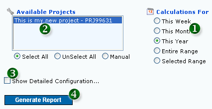
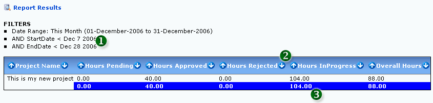
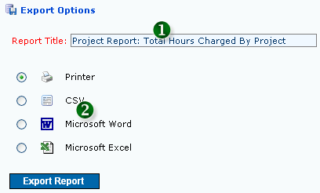
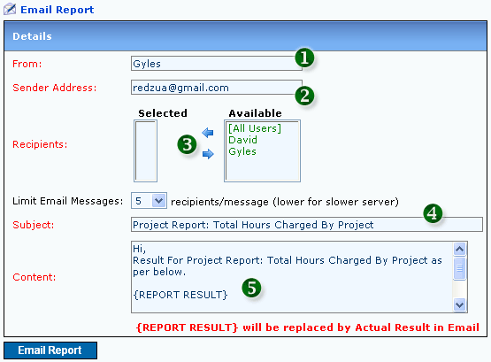
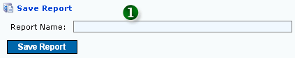
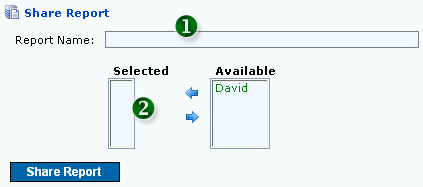

1. Standard Report Configuration (Configuration Tab)

Figure 1: Standard Report Configuration
- 1. SELECT DATE RANGE FOR HOURS CHARGED
- 2. SELECT PROJECT(S)
- 3. SHOW MORE CONFIGURATION OPTIONS
- 4. CLICK BUTTON TO GENERATE REPORT
|
2. Detailed Report Configuration (Configuration Tab)
 Figure 2: Detailed Report Configuration
Figure 2: Detailed Report Configuration
- 1. REPORT FILTERS: Select unlimited filters for the report
- 2. FIELD DISPLAY SELECTIONS: Select relevant fields for the report output and arrange the order of appearance. At least one field must be selected (Mandatory)
|
3. Report Result (Result Tab)
- Selected Filters: All the selected filters will be displayed in this field

Figure 3: Sample Report Result
- 1. FILTERS SELECTED DURING CONFIGURATION
- 2. SORTABLE FIELDS
- 3. GRAND TOTAL
The fields displayed are selectable via the detailed configuration. All result can be sorted according to the selected fields. The blue background is the sum of the fields.
|
4. Exporting Report Result (Export Tab)

Figure 4: Exporting Report Options
- 1. TITLE FOR THE EXPORT
- 2. EXPORTING FILE FORMAT
|
5. Emailing Report Result (Email Tab)

Figure 5: Emailing Report Result
- 1. FROM: Email From (Mandatory)
- 2. SENDER ADDRESS: Email Address of Sender (Mandatory)
- 3. RECIPIENTS: Recipients of the email (Mandatory)
- 4. SUBJECT: Email Subject (Mandatory)
- 5. CONTENT: Email Content (Mandatory). DO NOT REMOVE {REPORT RESULT} AS THIS VALUE WILL BE REPLACED WITH ACTUAL REPORT RESULT DURING EMAIL SENDING
|
6. Saving Report Configuration (Options Tab)

Figure 6: Saving Report Configuration
- 1. SAVED REPORT NAME
All current report configuration can be saved for later use. This saved configuration will appear in your "List Saved Reports" menu.
|
7. Sharing Report Configuration (Options Tab)

Figure 7: Sharing Report Configuration
- 1. SHARED REPORT NAME
- 2. USERS TO SHARE REPORT TO
All current report configuration can be shared with other users. This shared configuration will appear in the user's "List Shared Reports" menu.
|